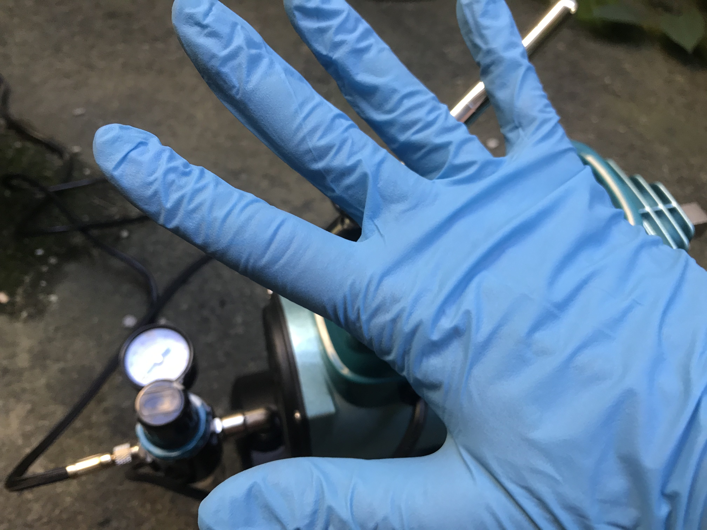
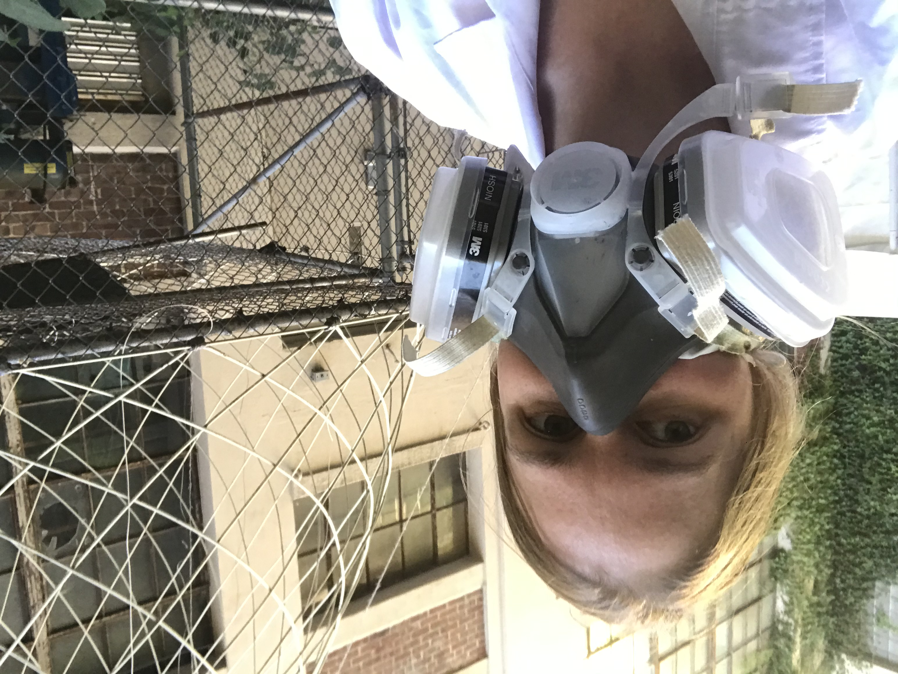
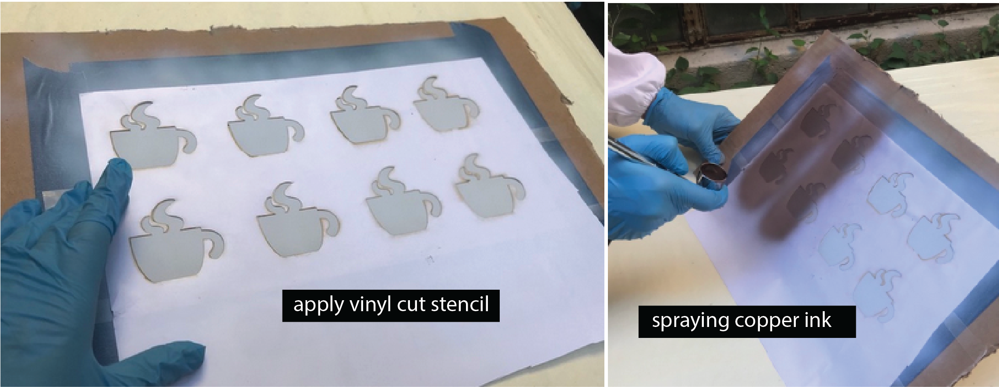

At the end of the lab, upload to your student google drive:
a short video (.mov or .mp4, max. 30s) showing one of your displays turn on
Group Work:
This lab is done in teams of 4 students. Each member of your team will spray one layer (phosphor, dieletric pass #1, dieletric pass #2, copper) of the electrolumiscent display. Thus, all steps below should be discussed as a team and then a decision for the entire team should be made. The reason we have each team member spray one layer for everyone rather than all layers for one-self is that after spraying one material, the airbrush has to be cleaned, which takes about 20 minutes, and the layer has to dry, which takes about 30 minutes. Thus, within the time frame we have in this class, having everyone spray all layers with all the cleaning and drying that is needed is not feasible (you would need ca. 4 hours per person to spray all layers).
Making Custom Shaped Displays: To make your display have a particular shape, consider the following: The display will only glow in those area that both have a top electrode (ITO sheet) and bottom electrode (copper). Any area that only has a top electrode (ITO) but is not covered by the bottom electrode (copper) will not glow. Thus, in order to make our display have a certain shape, we actually only need to shape either the top OR the bottom electrode, and not both. In our case, we will shape the copper electrode by laser cutting a stencil, applying the stencil on the already sprayed layers of the EL display and then spraying the copper electrode using this stencil. Thus, only the areas where the copper passes through the stencil will make the display glow.
Download Template Display Design (Coffee Cup): You can download our template design here. The design is a display shaped as a steaming coffee mug. As you can see, if contains several stencils in a row, this is because you will make 2 displays for each team member (8 in total) to ensure that a good number of them work (spraying a display is not easy, we will call it a success if 50% of your displays work, thus we have you fabricate some extra just in case). You may have noticed that the mugs are mirrored, i.e. the handle is on the left side not the right side. This is necessary because when we spray the stencil, it will form the bottom layer and the display will be flipped over in the end. Thus, if you forget about this you will have the handle on the wrong side. If you use our template design, move on to step (2) to laser cut the stencil, otherwise you can read below how you can make your own design.>
Create Custom Display Designs: If you decide to make a custom display designs, we still ask you to make 4 out of our standard displays design (i.e. 4 coffee mugs + 4 custom designs). By doing this, the chance is higher that some of them will work. To make a new design, you should download the display design template and replace 4 of the 8 mugs with the following constraints:
stay within the boundaries (large square) in the design template
4 design should be placed in a row
distance between designs needs to be 25mm
distance between rows need to be 25mm
your design should not contain delicate, thin elements (width <5mm)
do not forget to mirror your design at the end otherwise your display will not look as expected (e.g. mug handle on the left side not right)
Below is a video from last year when a team made their own design:
(2) Laser Cut Stencil
Go to the IDC and use the laser cutter to cut the stencil.
Pick up Adhesive Sheet for Stencil: We will cut our stencil from an adhesive sheet. The adhesive part will make it easy to attach the stencil to the existing three display layers. Pick up the adhesive sheet from the 6.810 material storage.
Check Drawing Size and other Drawing Settings: Open the file in your drawing program and confirm that the stencil design has the right size. The mug should be 48mm x 46mm and the overall design should show 8 little mugs and an outline around them.
Laser Cut the Stencil: The power/speed settings for laser cutting a material depend on the material type and how thick it is. The laser cutter settings for our adhesive sheet are as follows: power: 50%, speed: 100%.
(3) Put on Safety Wear
For spraying, you need to wear gloves, a lab coat, and a mask that filters out spray particles. We will give each student their own lab coat and mask. Please keep them for later use in the semester.
Lab Coat: Put on the lab coat. Make sure to close all the buttons on the lab coat. For use in class, we bought disposable lab coats, so after the semester is over you can dispose it in the trash.
Gloves: Next, put on the gloves. Never touch an ink container, the inks, or a sprayed area directly with your hands. Touching the ink can lead to some particles being taken up through your skin, so we want to avoid this at all times.
Mask: Put on the mask. The mask will protect you so that you don't breath in any flying particles during the spraying process. We will have a disposable mask for each student so you don't have to share.
Safety Glasses: Now also put on your safety glasses so nothing can splash into your eyes.


(4) Team Member 1: Prepare ITO and Spray Phosphor Layer
We will do this together when you come in for your spray time.
Before we can spray the phosphor layer onto the ITO sheet, we have to do a few preparation steps.
Cut Cardboard: Cut out a piece of cardboard larger than the ITO sheet. While spraying, you will hold onto the cardboard since you need to cover the entire ITO sheet with spray paint, so make sure the ITO sheet has enough space around it.
Remove Protective Cover from ITO Sheet: Before you tape the ITO onto the cardboard, remove its protective cover foil. The ITO sheet is sensitive to bending so try to not bend the sheet too much while you pull off the cover foil.
Identify Conductive Side on ITO sheet: The ITO sheet is only conductive on one side (i.e. the side where we just removed the protective cover foil). We want to spray onto the conductive side, so it needs to face towards you. Use a multimeter to check which side is conductive. Imagine how frustrating it would be if all your team mates come in for spraying just to find out at the end you sprayed on the wrong side of the sheet and nothing will work! image of multimeter ITO sheet testing missing
Tape ITO sheet to Cardboard: With the conductive side facing up, attach the ITO sheet with tape to the cardboard. Tape around the entire area of the sheet, it will help you later to see where you already sprayed since you can monitor the marks on the blue area around the ITO.
The taped areas will later be used to connect with a wire to the conductive ITO. Try to cover about 2cm of the ITO on each side. Don't cover more than that because you also need enough space for the EL displays.
Spray Phosphor Layer: Load the phosphor ink into the spray gun and spray the entire area of the ITO with phosphor. While you spray, make sure you have some distance between the airbrush and the object. If you are too close drops will from on the surface leading to uneven coverage. Do a first pass across the entire sheet by moving you hand vertically, i.e. up and down, and then a second pass horizontally moving your hand left to right. Make sure the entire area has even coverage. If there is more phosphor in one area than another your display will have some brighter and some darker spots. Once you are done, the layer needs to dry at least 30 minutes before your team mate can come in to spray the dieletric layer.
(5) Team Member 2 + 3: Spray Dieletric Layer Pass 1 and Pass 2
Next, we will spray the dieletric layer. Remember that the dieletric layer is super important. If the dieletric layer is not covering every single pixel there will be a short circuit in this area since the ITO sheet, phosphor layer, and copper layer (last layer) are all conductive and will touch each other and thus the display will not work.
Spray Dieletric Layer: Load the dieletric ink into the spray gun and spray the entire area of the ITO with dieletric ink. While you spray, make sure you have some distance between the airbrush and the object. If you are too close drops will from on the surface leading to uneven coverage. Team member 2 will do a first pass across the entire sheet by moving the hand vertically, i.e. up and down. Team member 3 will then do a second pass horizontally moving the hand left to right. For both passes, you want to make sure the entire area has even coverage. If there is more dieletric in one area than another your display will have some brighter and some darker spots since there is more resistance in some areas than in others. Once the dieletric layer is done, it needs to dry at least 30 minutes before your team mate can come in to spray the copper layer.
(6) Team Member 4: Spray Copper Layer with Stencil
Before we can spray the copper layer, you need to apply the stencil (we will do this together when you come in for spraying).
Apply Laser Cut Stencil: Peel the protective layer from the back side of the stencil foil to expose the adhesive side. Stick the stencil on top of the sprayed layers. Make sure the stencils (i.e., the coffee mugs) are not touching the transparent tape team member 1 taped onto the ITO sheet. Also make sure that your stencil covers the entire ITO sheet and there are no areas not covered by the stencil. When you apply the stencil, don't apply to much pressure so you don't damage the underlying layers.
Spraying the Copper: Load the copper ink into the spray gun and spray the entire area of the ITO with copper. While you spray, make sure you have some distance between the airbrush and the object. If you are too close drops will from on the surface leading to uneven coverage. Do a first pass across the entire sheet by moving you hand vertically, i.e. up and down, and then a second pass horizontally moving your hand left to right. Make sure the entire area has even coverage. If there is more copper in one area than another your display will have some brighter and some darker spots since some areas are more conductive. Once you are done, the layer needs to dry at least 30 minutes.

(7) Remove Stencils and Tape
You are done with spraying and now need to remove the displays from the cardboard.
Remove the stencil, peel off both stripes of transparent tape, peel off the blue tape around the ITO sheet, and then take the display strip off the cardboard.
(8) Wire up the Display
Test Conductivity of Copper with Multimeter: Before wiring up the displays, let's test how conductive the copper layer. This gives a good first estimate if the display will work or not. Use a multimeter and check if the copper layer is conductive. The tips of the multimeter are quite pointy and can damage the layers if you press too harshly on the copper, so be gentle.
A good resistance would be around 10Ω. Anything higher than 50Ω will likely not work.
Wire Connection to ITO and Sprayed Copper Layers: Before we can power up our display, we need to create a wire connection to the ITO and sprayed copper layer that will serve as GND and power. For this, we are using copper tape, which can later be connected to a crocodile clamp. Read more below on how to do it.
Attach Copper Tape to ITO sheet: First, attach copper tape to the ITO sheet as shown below.
Attach Copper Tape to Sprayed Copper layer: Before you do this, let's first cut the display sheet into individual displays. Next, attach a copper tape flap, which we can then use with a crocodile clamp. The flap should cover a large area on the display to make a good connection.
Test your Display: Next, we will attach a crocodile clamp to the copper tape on the ITO and the copper tape on the sprayed copper and see if your display lights up. Once we tested all your displays, you can either put them into your team storage at the IDC for everyone to pick up by themselves or bring them to your team mates.
Deliverables
At the end of the lab, upload to your student google drive:
a short video (.mov or .mp4, max. 30s) showing one of your displays turn on